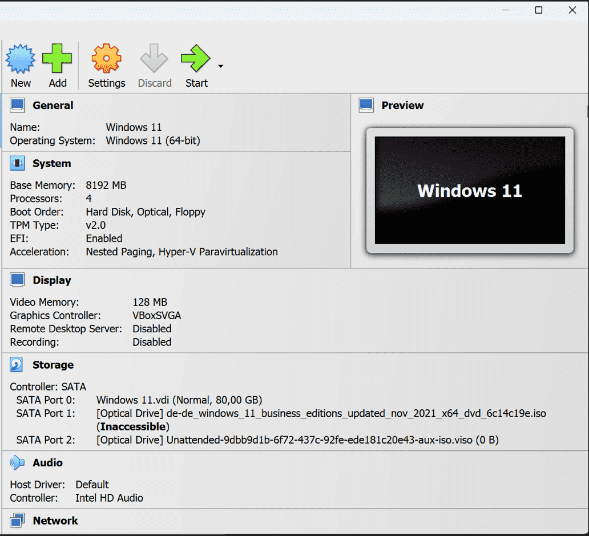
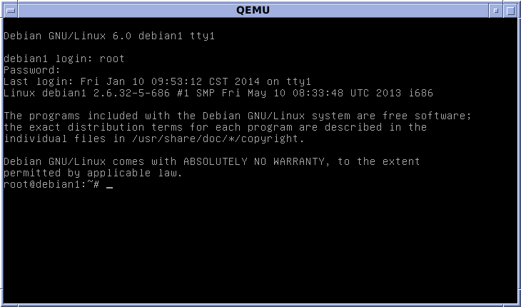
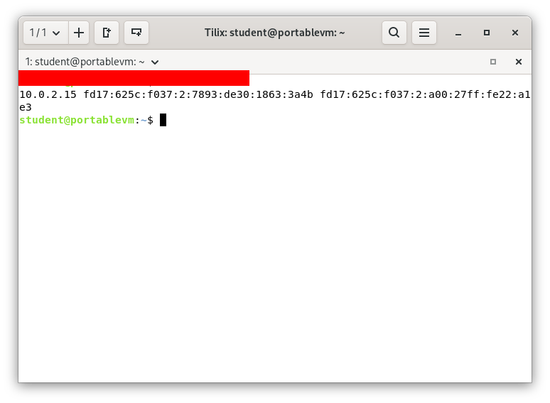
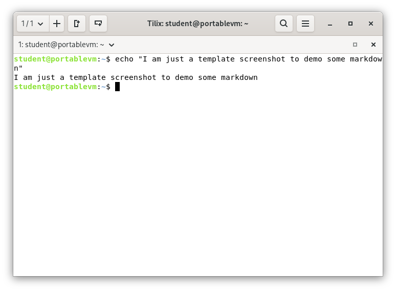

Deliverable 2
1. What are the server hardware specifications (virtual machine settings)?
This is just an example of a random vm settings

2. What is the Debian Login Screen?
This is just an old example. It should give you an idea of what I am looking for

3. What is the IP address of your Debian Server Virtual Machine?

4. How do you work with the Firewall in Debian? (Type and explain what each command does)
Command name
- Description: Est pariatur sint fugiat mollit ea est veniam proident nulla laboris excepteur.
- Formula/Syntaxt:
command + option + argument
- Examples:
- How do you check if the Firewall is running?
- By using the command
comand here
- How do you disable the Firewall?
- By using the command
command here
- How do you add Apache to the Firewall?
- By using the command
command here
5. What different commands do we use to work with Apache? (Type the command and include a screenshot!)
1. What is the command you use to check if Apache is running?
- The command is:
command here

2. What is the command you use to stop Apache?
- The command is:
command here
3. What is the command you use to restart Apache?
- The command is:
command here
4. What is the command used to test Apache configuration?
- The command is:
command here
5. What is the command used to check the installed version of Apache?
- The command is:
command here
6. What are some common configuration files for Apache?
- The command is:
command here
7. Where does Apache store logs?
- The command is:
command here
8. What are some basic commands we can use to review logs?
- The command is:
command here